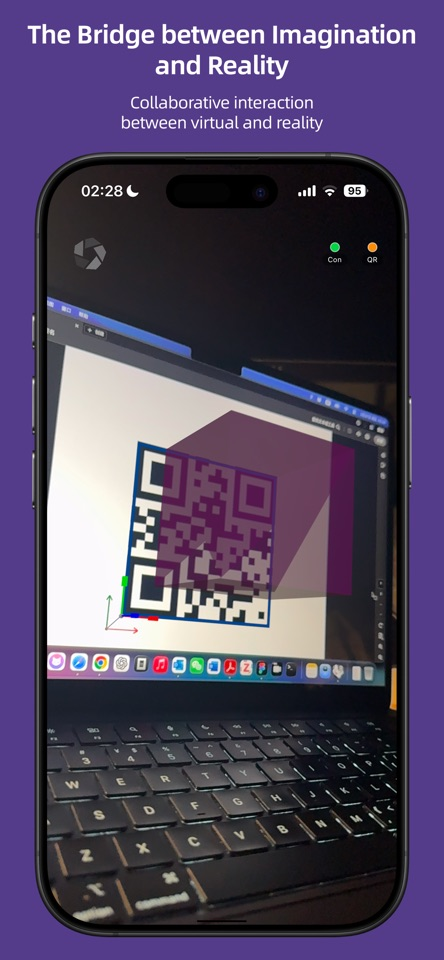
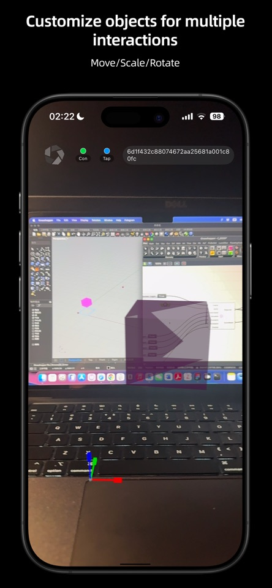
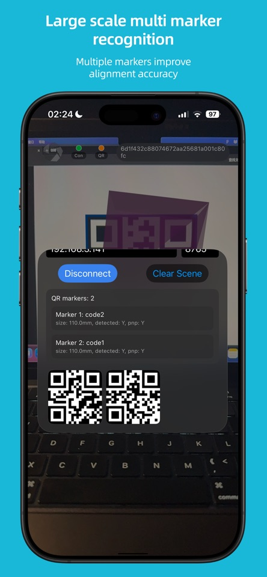
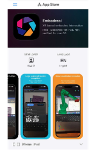
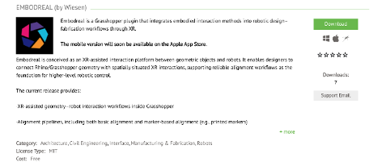
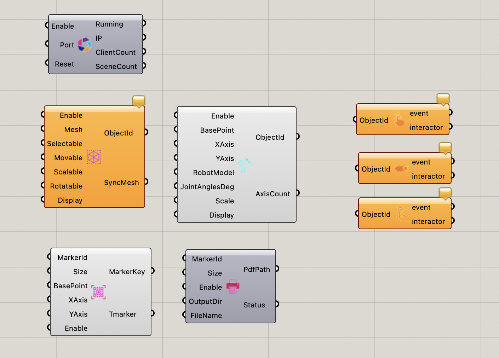
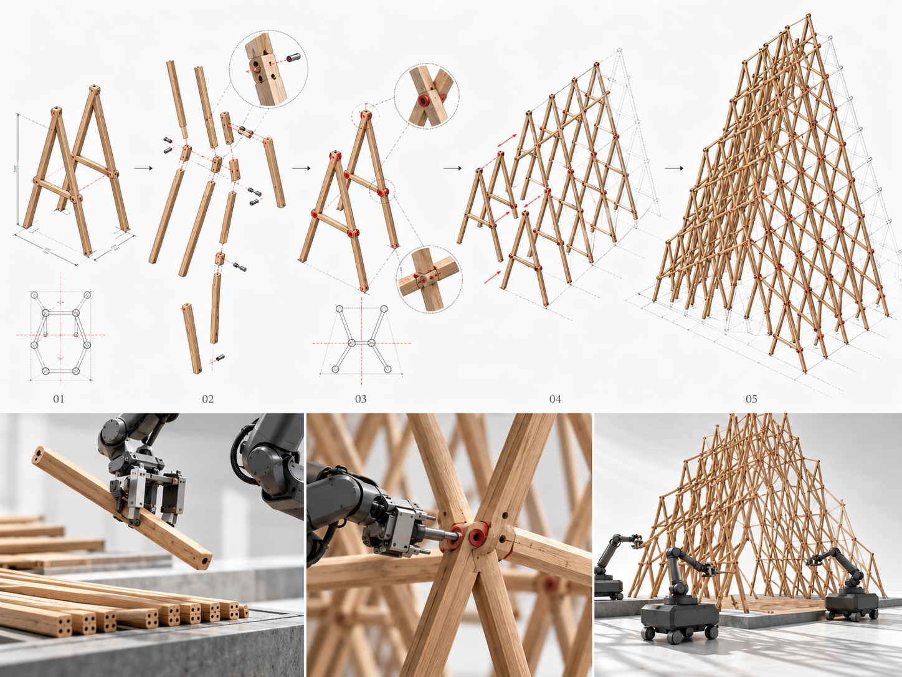
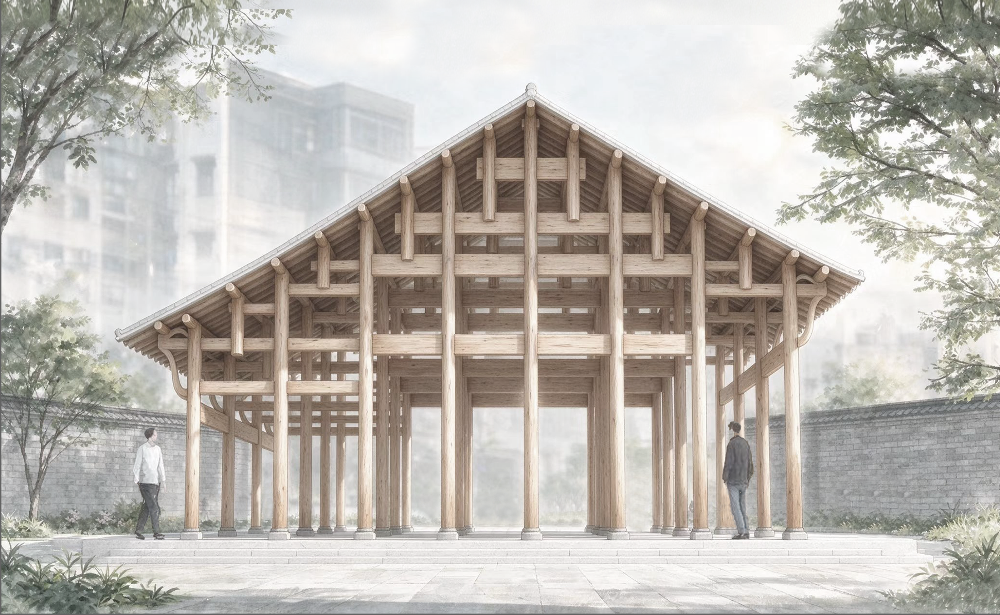

Embodreal
An XR platform connecting Grasshopper geometry, physical space, and robotic systems.



Geometry and robots, placed in context.
Embodreal connects Rhino and Grasshopper with spatial-computing devices. Designers can view digital geometry at full scale, align it with a physical workspace, and examine robot models, poses, and spatial relationships without leaving the design environment.
The platform is available as a Grasshopper plug-in and an Apple app. Its alignment tools provide the common spatial reference needed for later stages of robotic control and collaborative construction.
- Period
- 2025–present
- Location
- Harbin, China
Mobile client and Grasshopper plug-in.
Embodreal combines a mobile XR client distributed through the App Store with a Grasshopper plug-in distributed through Food4Rhino. Together they connect device-based spatial interaction with geometry and robotic workflows in Rhino and Grasshopper.


Two parts, one workflow.
The Grasshopper plug-in sends geometry and robot information into the XR scene. On the device, users align the digital model with the room, inspect it at full scale, and reposition content through direct spatial interaction.

2026 CDAC workshop.
Embodreal supported Physical–Virtual Co-Construction at the 2026 Computational Design Academic Forum Digital Construction Workshop. Participants developed timber construction proposals and tested their assembly logic through mixed-reality and multi-robot workflows.

